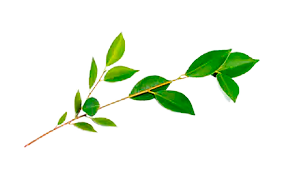
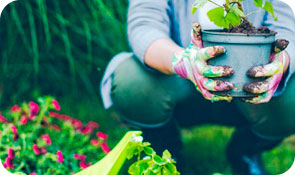
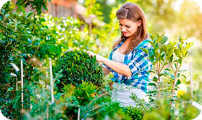
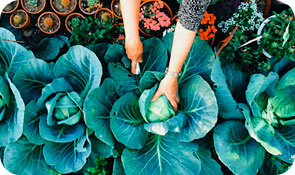
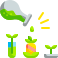

Популярные в разделе
Удобрения
10 апреля 2020
Теплица для огурцов своими руками – пошагово
Читать далее
Евгения Шилова
г. Екатеринбург
385
Рассада
10 апреля 2020
Как продать излишки урожая и рассады
Многие садоводы жалуются на то, что их посадкам причинен огромный ущерб по причине болезней или их же собственной
Читать далее
100
Название категории и подача новых




Важно знать!
Конечно, в полевых условиях сделать это не так легко, ведь многие возбудители прекрасно маскируются. Но надеемся, что подробные описания и фотографии помогут вам сориентироваться.
Заголовок сео-текста для главной
Грядки в теплице располагаются на усмотрение потребителя, П-образно, Ш-образно или три раздельных грядки. Это уже на усмотрение потребителя. А вот «заправка» грядки выполняется во всех случаях одинаково. На дно, первым слоем, укладывается крупный органический мусор (ветки, бревнышки, трухлявые ненужные доски и палки).
Вторым слоем мелкая органика (трава, листва). Третьим – картон. Четвертым – сантиметров двадцать компоста. Пятый заключительный – плодородная почва. Такой «слоеный пирог» будет хорош не только как долгоиграющая подкормка растениям, но и как биотопливо, то есть почвенный подогрев. А это значит создание комфортных условий и соответственно хорошая отдача в виде замечательных урожаев.